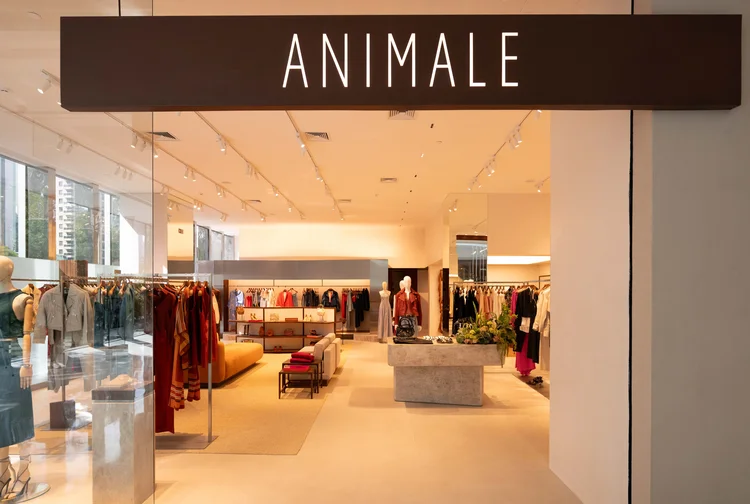

Novidades da rede e matérias sobre moda circular, upcycling e o impacto ambiental da indústria têxtil.
Destaque
Últimas publicações

Moda circular· 3 min de leitura
Animale amplia projeto de moda circular para todas as lojas após arrecadar 750 mil peças
O projeto Animale Vintage chega à sua oitava edição e passa a receber peças usadas em qualquer unidade da marca. Desde 2018, a iniciativa já arrecadou mais de 750 mil itens e destinou cerca de R$ 1 milhão a instituições sociais, prolongando a vida útil das roupas e criando novas histórias para peças que ainda podem circular.
Projeto de upcycling da Riachuelo transforma materiais sem uso em novas peças de moda
O segundo drop da linha Pool Loop, com direção criativa de Marcelo Sommer, ressignifica estoques parados da fábrica. A coleção conta com 25 modelos e mais de 650 unidades, recuperando mais de 620 peças com pequenos defeitos, 175 metros de tecidos e 557 aviamentos.
Tecnologia de reciclagem enzimática consegue produzir camisetas de poliéster a partir de resíduos complexos
A Carbios e o consórcio Fiber-to-Fiber validaram a produção industrial de camisetas de poliéster reciclado a partir de resíduos têxteis e plásticos complexos. O processo enzimático gera um r-PET com desempenho idêntico ao poliéster virgem, demonstrando a viabilidade da circularidade em escala industrial.
Dez inovações são reconhecidas por desenvolver soluções para transformar o futuro da indústria têxtil
A H&M Foundation anunciou os vencedores do Global Change Award 2026, com soluções que vão de fibras regeneradas a partir de resíduos agrícolas a plataformas digitais que prolongam o ciclo de vida dos produtos. As inovações abordam desde a reciclagem enzimática até alternativas biodegradáveis ao couro animal.
Circular Fashion Day incentiva reaproveitamento de resíduos têxteis e geração de renda em Belo Horizonte
O evento integra a programação da Semana do Meio Ambiente com oficinas e rodas de conversa sobre resíduos têxteis e empreendedorismo sustentável. A iniciativa busca transformar um dos principais desafios ambientais do setor em oportunidades de geração de renda, inclusão social e desenvolvimento sustentável.
Marca catarinense apresenta coleção produzida com resíduos têxteis na Semana de Moda de Milão
A Proposta Verde, de Rio do Sul, transformou cerca de 200 quilos de excedentes têxteis em 600 peças da coleção Enlaço, apresentada no Brazilian Sustainable Fashion in Milan. O projeto, em parceria com a Fundação Hermann Hering, ressignifica algodão, linho e viscose com modelagens fluidas e trabalho artesanal.